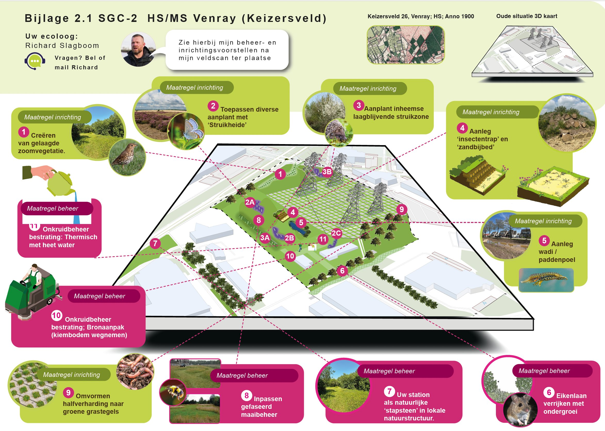

Biodiversiteits-infographic voor een HS/MS-station van Enexis. Elf inrichtings- en beheermaatregelen in één beeld. Van de ecoloog naar de beslisser.

Een ecoloog bezoekt een hoogspanningsstation en stelt voor: aanplant heide, insectenhotel, wadi, gefaseerd maaibeheer. Elf concrete voorstellen om biodiversiteit terug te brengen op industriële grond. Maar hoe overtuig je de beheerder? Niet met een lijst van elf bullets, maar met een verhaal dat meteen klopt.
Een 3D-perspectief van de locatie in het midden, met elf genummerde markers op de exacte plek. Daaromheen: elf cirkels met foto, uitleg en kleurcode. Groen voor inrichting, roze voor beheer. Een stippellijn verbindt elke cirkel met zijn plek op de kaart.
Boven aan de infographic staat de ecoloog met naam en gezicht. Geen anoniem rapport, maar een persoon die zijn expertise deelt. Dat maakt het menselijk, en dat is precies waarom het werkt.
Deze infographic wordt ingezet als bijlage bij inrichtingsvoorstellen. Eén beeld dat een veldscan van een ecoloog vertaalt naar iets dat een beheerder, een manager en een wethouder in tien seconden begrijpen.